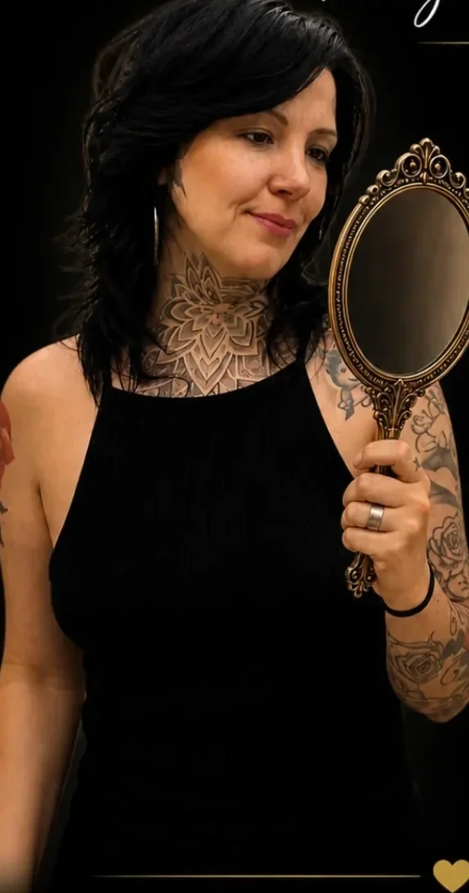
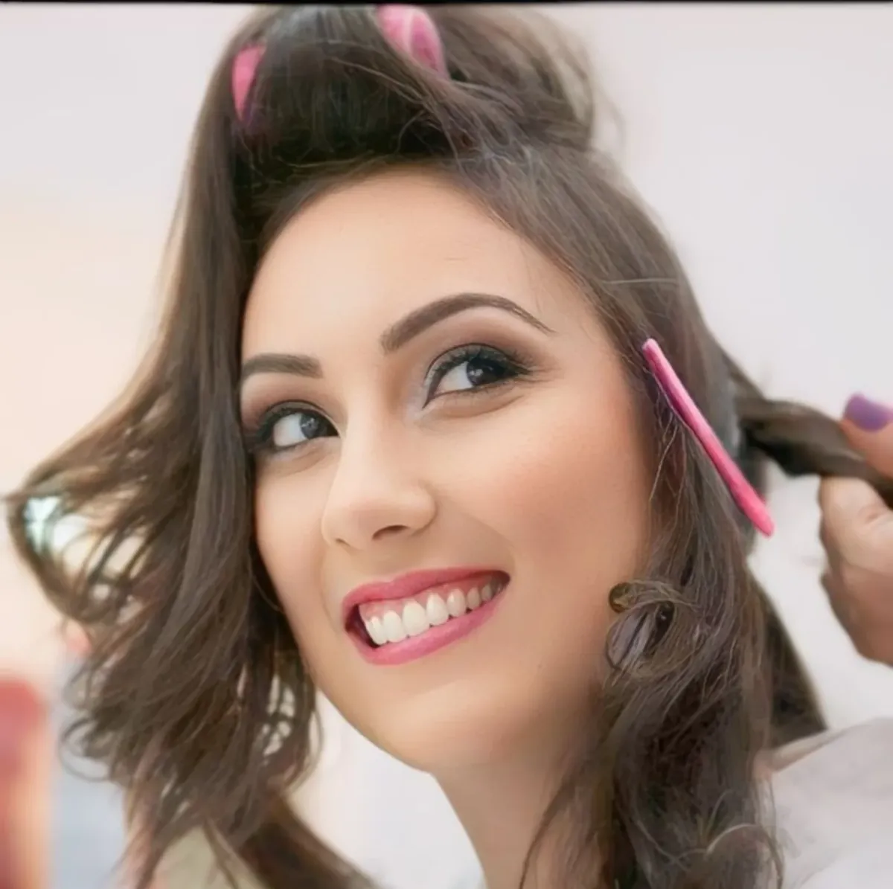
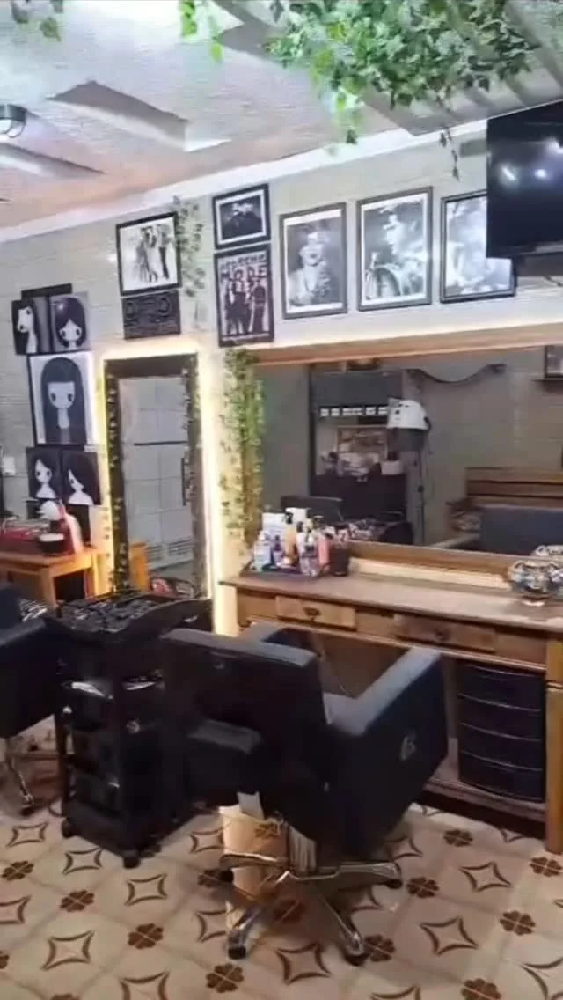
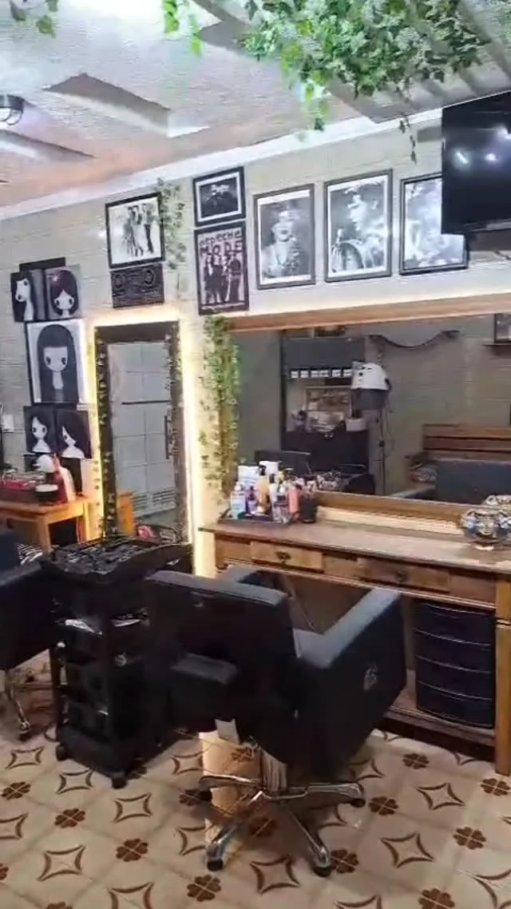
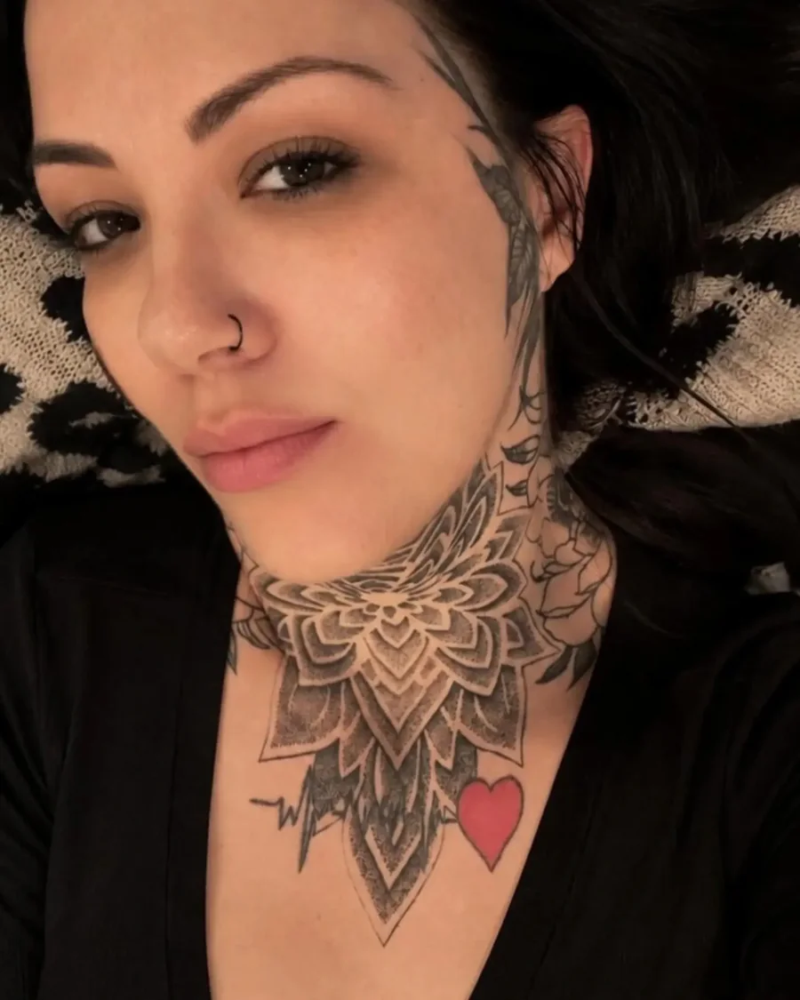

Cabeleireira e maquiadora · São Paulo
Andréia Oliveira
Há 14 anos cuidando de cabelo, maquiagem e penteado. Loiros e morenas iluminadas com saúde nos fios, cortes pensados para o seu rosto e produções para noivas e festas.
- 14 anosde profissão
- 1 clientepor vez
- Estúdioou domicílio

O que ela faz
Serviços
Cada atendimento começa com uma conversa sobre o seu cabelo: histórico de química, fundo de cor, resistência do fio e o resultado que você quer.
-
Loiros e mechas
Platinado, perolado, gold, amanteigado e mechas inversas para devolver o fundo de cor. Plano de clareamento feito para o seu fio, sem pressa.
Ver loiros -
Iluminação sem descolorir
Morena iluminada com pontos de luz suaves e reflexos que valorizam o rosto, sem pó descolorante. Indicada para fios finos e sensíveis.
Ver iluminadas -
Corte e cor
Cortes que estruturam a moldura do rosto, retoque de raiz, tonalização, ruivos, vermelhos e mechas marcadas para quem gosta de ousar.
Ver cortes -
Escova orgânica e tratamentos
Alinhamento, brilho e menos frizz sem pesar os fios. Reconstrução e nutrição com Wella, Truss e Senscience, também depois da química.
Agendar -
Maquiagem
Social, para o dia ou para a noite, airbrush para foto e longa duração, e maquiagem para pele madura, leve e hidratada.
Ver maquiagens -
Penteados
Coques, tranças, semipresos e escova modelada para casamento, formatura, aniversário ou o evento da semana.
Ver penteados -
Dia de noiva
Cabelo, maquiagem e penteado da noiva, da mãe e das madrinhas, no estúdio ou no local da produção.
Saber mais -
Aula de automaquiagem
Individual ou em grupo pequeno, com as suas maquiagens: preparação de pele, delineado e uma make simples para o dia a dia.
Perguntar datas
Valores: a preencher. Cortar só as pontas tem o mesmo valor do corte, porque o trabalho de análise e técnica é o mesmo.
Portfólio
Trabalhos recentes
Fotos das clientes, tiradas no estúdio logo depois do atendimento.

Casamentos e festas
Dia de noiva
Um dia pensado em cada detalhe: cabelo, maquiagem e penteado feitos com calma, para você se olhar no espelho e se reconhecer.
- Maquiagem airbrush: cobertura fina e uniforme, resistente a calor, suor e lágrimas.
- Produção também para mãe, madrinhas e formandas.
- Atendimento em domicílio ou no local da produção.
- Teste de maquiagem antes do grande dia: a confirmar.
Onde ela atende
O estúdio
Um espaço só dela, preparado para receber uma cliente por vez, com atendimento sem pressa e anos 80 tocando de fundo. Quem prefere ficar em casa pode pedir atendimento em domicílio.

- AtendimentoExclusivo, uma cliente por vez
- OndeSão Paulo, SP · bairro a preencher
- DomicílioCom hora marcada, para cabelo, make e noivas
- ProdutosWella Professionals, Truss, Senscience e Itallian Hairtech
- Horáriosa preencher


Quem atende
Sobre a Andréia
São 14 anos de profissão. A Andréia começou nos salões do Tatuapé, onde passou anos entre loiros, cortes e noivas, e fez a formação em maquiagem na Escola Madre. Hoje atende no próprio estúdio, montado do jeito dela, e na casa das clientes.
Ela gosta de rock, de anos 80 e da gata Salem, e tem a pele bem tatuada. Já maquiou a Fernanda Takai e a Erika Martins, mas fala com o mesmo carinho da cliente que acompanha há anos e virou amiga.
"Cada cliente que passa pela minha cadeira recebe um plano exclusivo, com análise do fundo de cor e da resistência do fio."
Agenda
Como agendar
Conte o que você quer
Escolha o serviço no formulário e, se tiver, separe uma foto de referência e uma do seu cabelo hoje.
Receba a avaliação
A Andréia responde no WhatsApp com os horários livres e, para química, uma avaliação do que é possível no seu fio.
Venha ou receba em casa
No estúdio, uma cliente por vez. Em domicílio, ela leva o material e combina o horário com antecedência.
Agenda aberta
Reserve seu horário
A mensagem é montada no site e chega pronta no WhatsApp da Andréia.